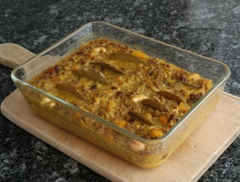

| Zutaten für | ||
| 6 Personen | 4 Personen | |
| 2 | 1 | Zwiebeln |
| 2 TL | 1 TL | Sonnenblumen Öl |
| 1 kg | 500 g | gehacktes Lammfleisch |
| 40 g | 20 g | Rosinen |
| 40 g | 20 g | getrocknete Aprikosen |
| 2 Scheiben | 1 Scheibe | Brot |
| 3 dl | 1.5 dl | Buttermilch |
| 3 | 2 | Eier |
| 1 | 1 | Apfel |
| 30 g | 15 g | Mandelscheiben |
| 2 TL | 1 TL | Aprikosen-Konfitüre |
| 1 TL | 1/2 TL | Curry Pulver |
| 1 TL | 1 TL | Zitronensaft |
| Salz | ||
| schwarzer Pfeffer | ||
| 8 | 4 | Zitronen- oder Loorberblätter |
| 1/4 TL | 1/4 TL | Kurkuma |
| Basmati Reis | ||
| Chutney | ||
Zwiebeln fein hacken.
Aprikosen schnätzeln.
Brot zerkrümeln.
Apfel schälen und raffeln.
Zwiebel im heissen Öl glasig dünsten.
Hackfleisch dazugeben und leicht anbraten.
Kochendes Wasser über die Rosinen und Aprikosen giessen und etwas quellen lassen.
Die Brotkrumen mit 1dl Buttermilch und einem verklopften Ei vermischen.
Dann die ausgepressten aufgequollenen Früchte, den geraffelten Apfel, die Mandelplättchen, die Aprikosenkonfitüre, das Curry Pulver und den Zitronensaft zugeben und mit Salz und Pfeffer würzen.
Eine Gratinform ausbuttern und mit der Mischung füllen. Limettenblätter oder Loorberblätter hineinstecken.
Bei 180°C 30 Minuten backen.
Aus dem Ofen nehmen und mit einer Mischung aus 2 dl Buttermilch und 2 Eiern und Kurkuma überziehen.
Weitere 10 Minuten im Ofen backen.
Mit Basmati Reis und Chutney servieren.
Cape Town Food, p94
Kann auch mit gehacktem Seehecht zubereitet werden.
Siehe auch Bobotie
Makes a very nice bobotie, RE, April 2004
Was very nice on 25.4.2010
Die im Bild gezeigte Form enthält nur die halbe Menge Bobotie. Das reicht eigentlich schon für 4 Personen. RE 23.11.2013
@LINKBACK_TAG@ @WAKELOCK@